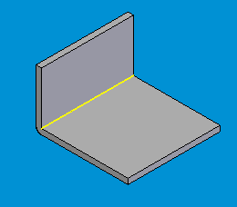
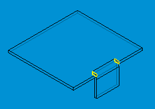
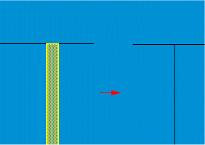
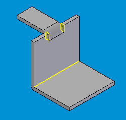
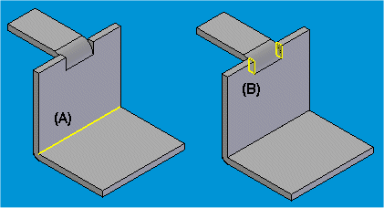

Delete Relief Faces command
Deletes zero-radius bend faces and system-generated bend relief from the model.
When you create a feature with a zero-radius bend or no bend relief specified, Solid Edge creates a very small bend radius and minimum bend relief. This is done to facilitate flattening of the model.
This command deletes the system-generated interior rounds and bend relief.
Deleting zero bend radius
When you specify a zero bend radius when creating a feature, Solid Edge creates a very small bend surface.
When you click the Delete Relief Faces command, it automatically selects the bend surface.

When you click the Preview button, Solid Edge deletes the bend surface.
Deleting system-generated relief
When you specify no bend relief when creating a feature, Solid Edge automatically creates a very small bend relief to prevent merging of the sheet metal model.
When you click the Delete Relief Faces command, it automatically selects the system-generated bend relief.

When you click the Preview button, Solid Edge deletes the system generated bend relief.

If a sheet metal model contains features with both a zero bend radius and no bend relief, both are selected when you click the command.

You can use the options on the command bar to display either the faces created by the zero bend radius (A) or the faces created by the system-generated bend relief (B).
